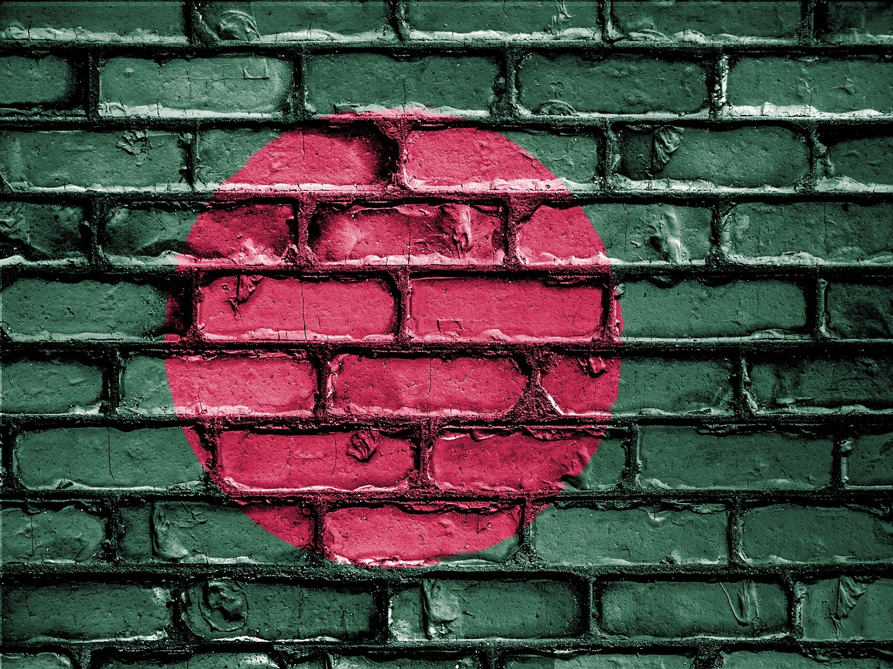

Bangladesh, officially the People's Republic of Bangladesh (গণপ্রজাতন্ত্রী বাংলাদেশ Gaṇaprajātantrī Bāṃlādēśa), is a country in South Asia. It shares land borders with India and Myanmar (Burma). Nepal, Bhutan and China are located near Bangladesh but do not share a border with it. The country's maritime territory in the Bay of Bengal is roughly equal to the size of its land area. Bangladesh is the world's eighth most populous country. Dhaka is its capital and largest city, followed by Chittagong, which has the country's largest port. --- Wikipedia